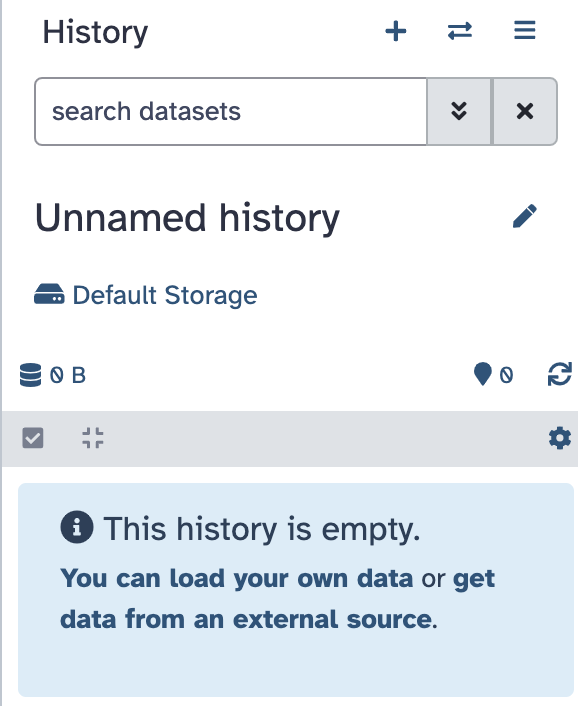
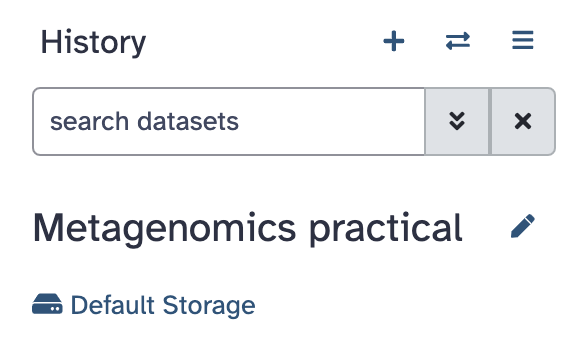
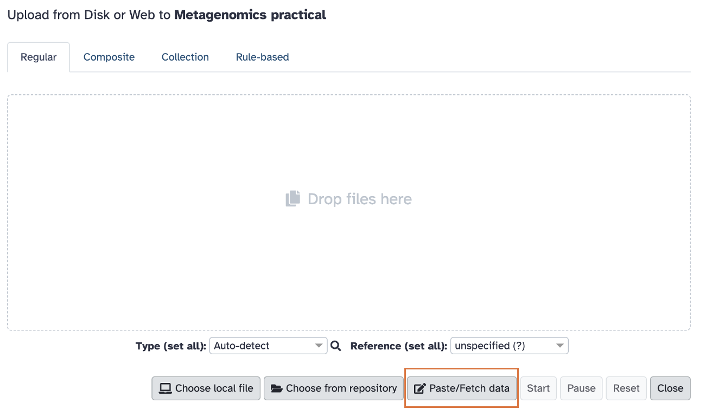
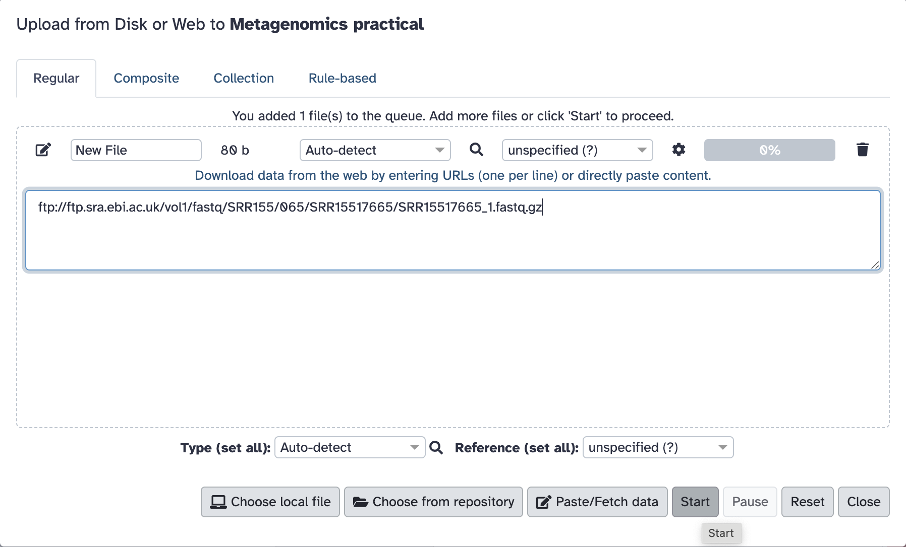
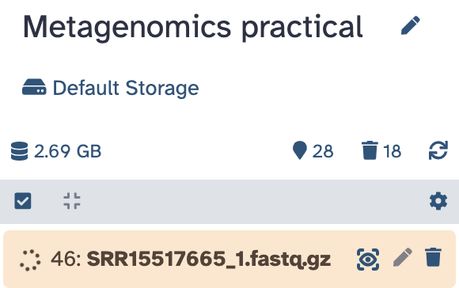
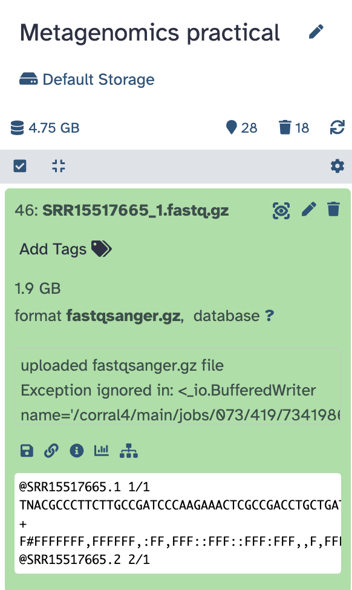
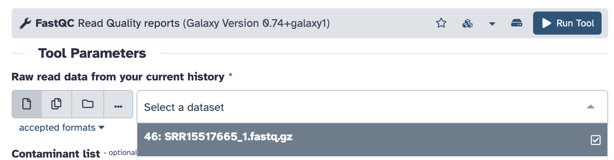
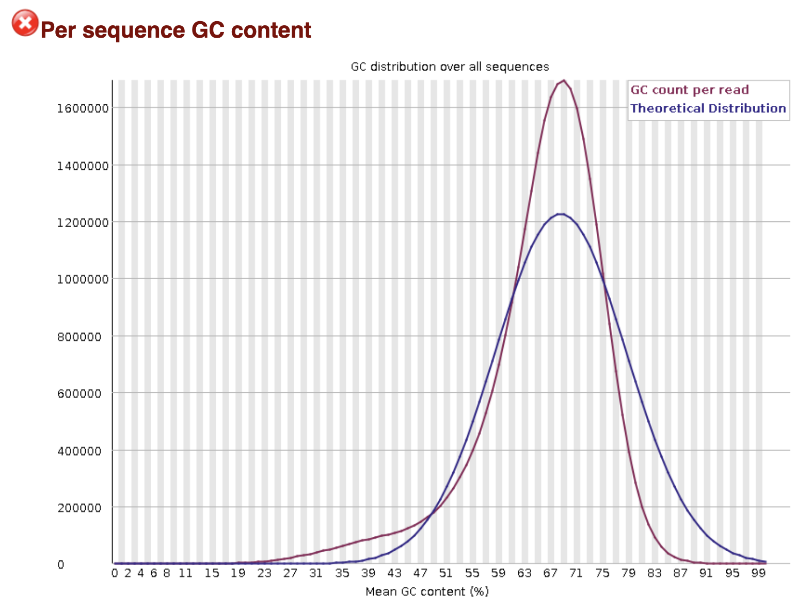
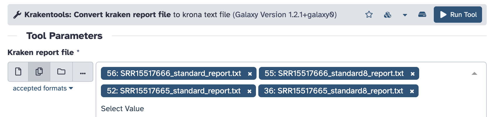
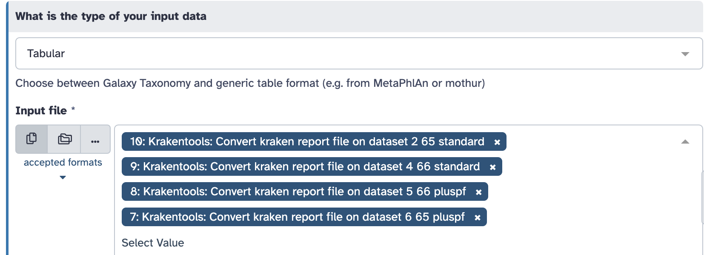

Metagenomics practical
![]()
Learning Objectives
- Evaluate the quality of metagenomic sequencing data using appropriate metrics and tools.
- Identify the taxa present in the sample and visualise them in a Krona plot.
- Apply Kraken2, KrakenTools, and Bracken to perform taxonomic classification of metagenomic data.
- Calculate and interpret alpha diversity metrics from metagenomic samples using the above tools to gain ecological insights.
Set up your Galaxy account and workspace
Steps:
- Navigate to: Galaxy
- In the upper right corner click on “Register” and go through the steps (skip if you already have an account).
Important: make sure you activate your account by clicking the link Galaxy will send to your email address. - Create and name your Galaxy history:
- Find the history panel on the right-hand side and click on the “+” to create a new history (its default name will be “Unnamed history”)

- Click on the name and change it to “Metagenomics practical”. It should look like this:

- Find the history panel on the right-hand side and click on the “+” to create a new history (its default name will be “Unnamed history”)
Download data
In today’s practical, we will be working with two samples from tomato rhizosphere: SRR15517665 and SRR15517666. We will start by taking a look at just one FASTQ file to assess its quality. In real life, you would do this for all four files (there are two FASTQ files per sample since this is paired-end sequencing).
Steps:
Locate and click on the Upload button in Galaxy (upper left corner of the page):
A window will pop up. Click on the “Paste/fetch data” (shown in the image below):

Paste the following link in the window and click Start: ftp://ftp.sra.ebi.ac.uk/vol1/fastq/SRR155/065/SRR15517665/SRR15517665_1.fastq.gz

The pop-up window will turn green, and you can now close it.
The upload will take a few minutes. While the data are uploading, you will see the process in your history appear in orange and with a spinning wheel. This will be the case for all processes that are in progress in today’s practical. When processes complete, they turn green.

When the upload is complete and the process has turned green, you can click on it and see your data preview:

Check data quality
Before we proceed with the analysis, we should check that the data quality is OK. Normally, we would do this for all FASTQ files but for the purposes of this exercise we will try with one. We will be using FastQC.
Steps:
- Click on the “Tools” icon on the left-hand side, locate
FastQC(or search for it in the search window that will appear) and click on it.
- We will only be specifying one parameter: “Raw read data from your current history”. Select the FASTQ file we just downloaded and click the blue “Run Tool” button:

FastQCshould now be running (you should see it in orange in your history menu on the right). Because it takes a while to run on such a large file, we will proceed to other steps now and come back to look at the results later.
Note the step number in Galaxy history to easily come back to it when it’s done.
Who is in my sample?
Let’s now find out what taxa we have in these two samples. We will be using Kraken2.
Because of how large the files are (this is the reality of metagenomics, especially soil/rhisozphere), we already ran Kraken2 for you. You will be working with the outputs of these runs.
This is the command that was used on each of the two samples (using SRR15517665 as the example here):
kraken2 --paired --gzip-compressed --threads 32 --db Standard \
--report SRR15517665_standard_report.txt --output SRR15517665_standard.out \
Fastq/SRR15517665_1.fastq.gz Fastq/SRR15517665_2.fastq.gzHere is what the different parameters mean:
--paired: specifies that we have paired FASTQ files (forward and reverse reads)
--gzip-compressed: specifies that our FASTQ files are gzip compressed
--threads 32: tells Kraken2 to use 32 threads (for faster processing)
--db Standard: specifies the database to use. Here, we are using Kraken2’s Standard database.
--report: tells Kraken2 to produce a report file and specifies the file name for it. We will be using this report in the upcoming steps.
--output: specifies where to save the output to
Fastq/SRR15517665_1.fastq.gz Fastq/SRR15517665_2.fastq.gz: these are paths to the paired-end FASTQ files.
We also ran this command again using a different Kraken2 database - PlusPF-8 (this is the standard database + protozoa and fungi, capped at 8GB)
Steps to load the Kraken2 results into Galaxy:
- Click on the “Upload” icon in the top left corner in Galaxy, then on “Paste/fetch data”
- Paste the following links into the window:
https://ftp.ebi.ac.uk/pub/databases/metagenomics/temp/Plant_breeding_course_2025/Kraken_results/SRR15517665_standard.out
https://ftp.ebi.ac.uk/pub/databases/metagenomics/temp/Plant_breeding_course_2025/Kraken_results/SRR15517665_standard_report.txt
https://ftp.ebi.ac.uk/pub/databases/metagenomics/temp/Plant_breeding_course_2025/Kraken_results/SRR15517666_standard.out
https://ftp.ebi.ac.uk/pub/databases/metagenomics/temp/Plant_breeding_course_2025/Kraken_results/SRR15517666_standard_report.txt
https://ftp.ebi.ac.uk/pub/databases/metagenomics/temp/Plant_breeding_course_2025/Kraken_results/SRR15517666_PlusPF-8_report.txt
https://ftp.ebi.ac.uk/pub/databases/metagenomics/temp/Plant_breeding_course_2025/Kraken_results/SRR15517665_PlusPF-8_report.txtPress Start, the window should turn green and you can close it.
Data quality - check the results
While the Kraken2 results are loading, let’s check the outputs of FastQC, which should now be ready.
In the history panel on the right-hand side locate the FastQC output. It should be called FastQC on dataset [number]: Web page. Click on the eye icon to view it.
How many sequences are there in total in this FASTQ file?
30,972,510 (You can get this number from the “Basic Statistics” table
Scroll through the results and examine the plots (you can download them to make this easier). Did any of the steps not pass quality control? Can you think why that might be?
The GC-content plot “failed”. However, the theoretical, normal distribution is built with the expectation that the sequencing data comes from a single genome. Because this is a metagenomic sample and it contains a mix of different species each with its own GC content, the distribution does not follow the curve expected for a single species. In other words, this is expected in this case.

Who is in my sample? - continued
Now that we know that our sample is good quality, we can proceed with analysis. We will start by making four Krona plots (two per sample - one for the standard database and one for the PlusPF-8 database).
Steps
- Search for
Krakentools: Convert kraken report file to krona text filein the list of tools on the left-hand side of the page in Galaxy.
- Kick off Krona plot input generation for the four Kraken report files (see the screenshot - you can choose multiple input files if you click the “Multiple datasets” icon:

Clicking the “Run Tool” button will start four Krona plot input generation jobs, wait for them to finish.
- Take the time to rename the outputs of Step 2 so that you keep track of samples:
- Go through the four results named similarly to “Krakentools: Convert kraken report file on dataset 36”, one at a time by clicking on the pencil icon (“Edit attributes”)
- Click on the “Details” tab to check which Kraken2 report file was used as input
- Then click the “Edit” tab, and add the information to the “Name” field (record both the sample name and the Kraken2 db that was used - Standard or PlusPF-8
- Click “Save”.
- Go through the four results named similarly to “Krakentools: Convert kraken report file on dataset 36”, one at a time by clicking on the pencil icon (“Edit attributes”)
- Make the Krona plots: search for
Krona pie chart from taxonomic profilein the tool panel.
Select “Tabular” in the “What is the type of your input data” field. As your inputs, select the four files you just renamed in Step 3:

Click “Run Tool”
- You will get 4 Krona plots as your output. Remove the noisy labels next to the Krona plot by clicking on the “X” icon just above them (located to the right of the Krona plot).
For each run (SRR15517665 and SRR15517666) compare how the Krona plots look for the Standard database and for the PlusPF-8 database. Are there any differences?
Now compare the two samples to each other (make sure you are comparing the results obtained using the same database). What can you say about their relative taxonomic composition?
Calculating alpha diversity
Alpha diversity describes how diverse a single sample is. It summarizes how many taxa are present (a metric called richness) and how evenly they are distributed within that one sample. In other words, it answers the question “How complex is this community?”
We can compute diversity metrics from the Kraken2 outputs but we first need to process them with a tool called Bracken. Bracken fixes a known limitation of Kraken2 by turning classifications into more accurate abundance estimates. Kraken2 classifies each read to the lowest common ancestor (LCA) in the taxonomy. It is optimised for speed and classification, not abundance. If a read matches multiple closely related species, Kraken2 assigns it higher up (genus, family, etc.) leading to inflated counts of higher taxonomic levels.
Bracken uses k-mer distribution information from the Kraken2 database to reassign reads downward to species (or genus, etc.). It estimated read counts and relative abundances and answers the question “Given these ambiguous classifications, what is the most likely true abundance?”
For this exercise, we will only use Kraken2 outputs computed using the Standard database to save time. We will be computing the Shannon diversity index, which will give us a single number summarising species richness and evenness in a sample.
Given the Krona plots you just examined, how different do you expect alpha diversity to be between the two samples in your analysis?
Steps to run Bracken
- Search for
Brackenin the list of tools. - In the
Kraken report filefield, click theMultiple datasetsicon to enable selection of several reports. Choose filesSRR15517665_standard_report.txtandSRR15517666_standard_report.txtas inputs from the drop down list. - In the
Select a Kmer distribution field, chooseStandard(this was the Kraken2 database used to generate these reports). - Leave the remaining parameters unchanged and click
Run Tool
Examine Bracken outputs - did any read counts get reassigned?
Steps to calculate alpha diversity for the two samples
- Search for
Krakentools: Calculates alpha diversityin the Tools list - Click the
Multiple datasetsicon and select the two Bracken reports as inputs. - Leave the remaining parameters unchanged and click
Run Tool
You will receive a Shannon index value for each sample.
What values for Shannon diversity index did you get? How different are they between the two samples? Is this what you expected?
Do you remember from the lecture what the Shannon diversity index values you got might mean?